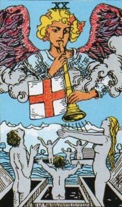
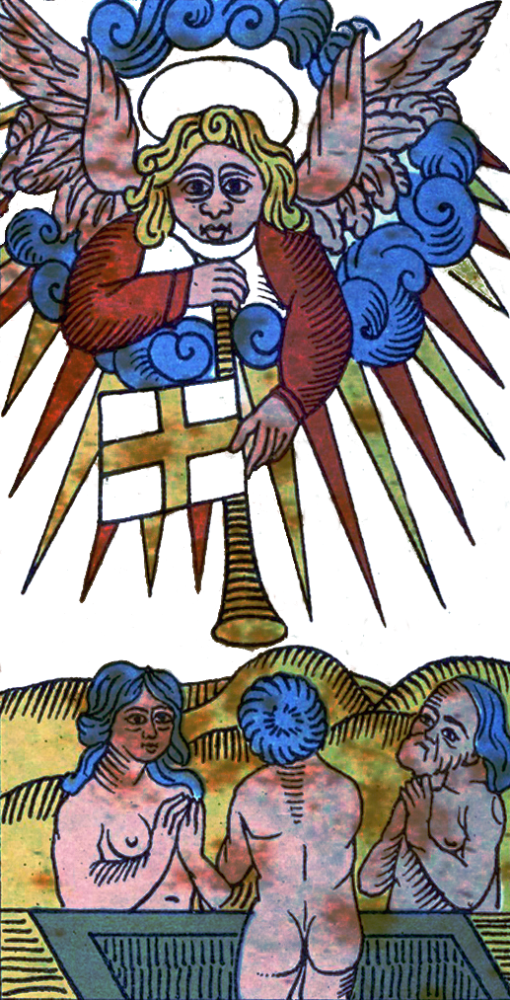
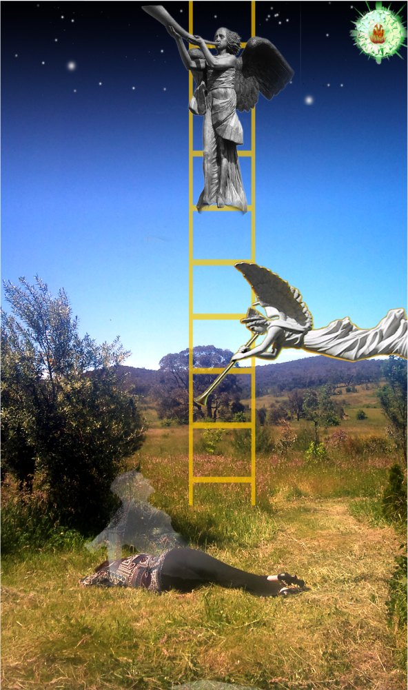
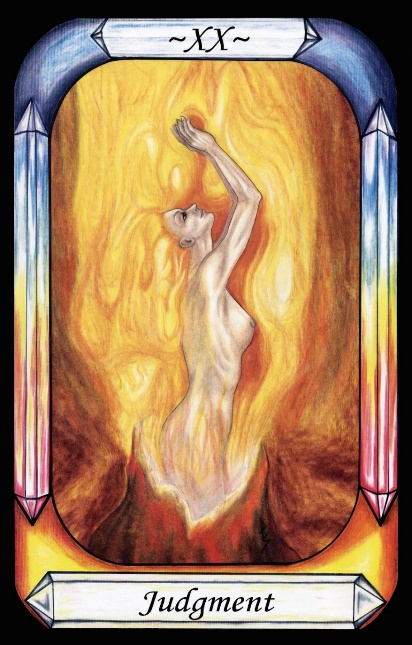
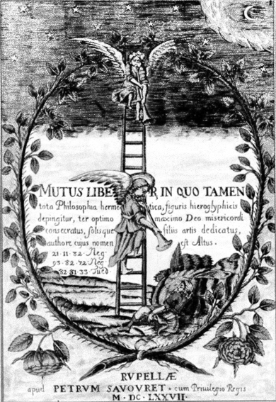

Judgement Day




Representation |
Christian Judgement Day |
Meaning |
Death is not the end of all. After Death, the soul may rise again, and if Judged light enough (Egyptian mythology) may rise up again past the Governors to heaven (Pymander). The soul is eternal (Plato). |
Opposite card |
The Fool, who desires to ascend but cannot. |
Function |
Meaning of Life (afterlife) |
Judgement Day comes from Christianity, as the day that the dead will rise from the grave if they were good in life. It also relates to the Egyptian weighing of the soul to determine whether it can ascend or not. After Death, the Soul journeys upwards, but the extent of its journey is determined by what influences of the Governors has been shed during life. In the Pymander, the soul can only rise as far as it has shed the mortal sins in life.
[P48] He who knows himself knows that he was born of God, who is Light and Life, which can ascend. If you know yourself to be of Light and Life, then you shall return to them. [Judgement]
[P50] God says that Man shall come again into Light and Life if he comes to know his true nature, which is also of Light and Life, Mind and Soul.
RWS Imagery
An angel blows a trumpet, which bears a pennant of an equal-armed orange cross on a white background (St. George). Below a number of naked people rise up in coffins (perhaps stone ones), look to the angel and raise their arms. There is both Water and land in the scene.
Interpretation of RWS Imagery
The Waite card seems to be a direct interpretation of the Biblical Judgement Day – the day when all spirits are called forth from their dead bodies to be Judged.
Figure 26 below is taken from Mutus Liber
Herald Angels wake a slumbering Alchemist with trumpet blasts. Would we but wake up and perceive the truth we would see a stAirway to heaven before us with guides willing to help us ascend
Discussion
The Pymander lesson is simply and clearly the lesson that if you know thyself to be originally of Light and Life, of Heaven, and not of this material world, and successfully free yourself from the influence of the Governors during life, then you shall ascend once more to Gods side.

Figure 27 - Alchemical image with angels and trumpets
from Mutus Liber (Silent or Wordless Book), 1677, France, Pierre Savouret
Crowley’s use of the Aeon, representing Boundless Time, as replacement for Judgement Day reflects Plato’s immortality of the soul, which rises after Death in the traditional card.